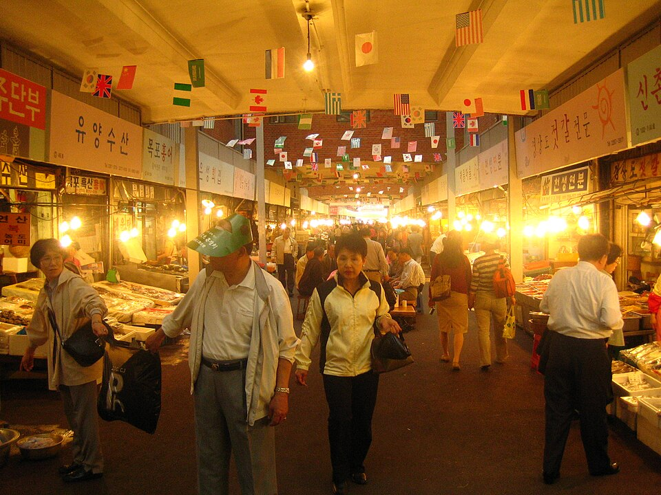

Seúl en pantalla: dónde comer y qué ver, del Mercado de Gwangjang a la N Seoul Tower
Del bindaetteok y el yukhoe del Mercado de Gwangjang al sashimi y el ramyeon de marisco de Noryangjin, pasando por Gyeongbokgung, la N Seoul Tower, Bongeunsa y el Museo Nacional del Folclore: lugares de Seúl que aparecen en vídeos de viajes y en el programa coreano 'Welcome, First Time in Korea?'.
Seúl, tal como se ve en pantalla
Seúl es la capital de Corea, una ciudad donde palacios reales, mercados tradicionales, el río Han y deslumbrantes vistas nocturnas comparten el mismo mapa. El samgyeopsal y el gopchang son los favoritos de los locales, pero los platos que aparecen una y otra vez en los vídeos de viajes son el bindaetteok y el yukhoe del Mercado de Gwangjang y el ramyeon de marisco de Noryangjin. A continuación tienes una guía de los lugares que salen en tours de comida callejera y en el programa de variedades coreano 'Welcome, First Time in Korea?' (어서와 한국은 처음이지), dividida en comida y lugares de interés.
Dónde comer
Mercado de Gwangjang

📍 Mercado de Gwangjang · Naver Map · Google Maps
Un mercado tradicional conocido por su crujiente bindaetteok (tortita de frijol mungo), el yukhoe (tartar de ternera al estilo coreano) y el mayak gimbap en formato bocado. Es un habitual de vídeos de comida callejera como 'Ultimate Seoul Street Food Tour' y 'Gwangjang Market at Night – Korean Street Food Experience'. En 'Welcome, First Time in Korea?', tres amigos de México probaron aquí pulpo vivo. Mira los vídeos nocturnos para hacerte una idea de cómo es el mercado cuando cae la noche.
Mercado de Pescado de Noryangjin

📍 Mercado de Pescado de Noryangjin · Naver Map · Google Maps
Elige tu marisco en el mercado, disfrútalo como bandeja de sashimi y termina con un cuenco de ramyeon de marisco. En 'Welcome, First Time in Korea?', unos chefs con estrella Michelin sorbieron ramyeon de marisco de madrugada, y un grupo de chefs neerlandeses probó una bandeja de sashimi fresco. También hay una recopilación de visitantes primerizos abrumados por el bullicio del mercado, útil como anticipo antes de ir.
Qué ver
Palacio de Gyeongbokgung

📍 Palacio de Gyeongbokgung · Naver Map · Google Maps
Un palacio que se disfruta mejor recorriéndolo a pie vestido con hanbok. 'Walking Tour of Gyeongbokgung Palace in Full Hanbok' y 'A Hanbok Day at Gyeongbokgung' muestran cómo es pasar un día con traje tradicional, y una gran familia canadiense de 'Welcome, First Time in Korea?' empezó aquí su viaje antes de ir a Gangneung en KTX.
Museo Nacional del Folclore de Corea

📍 Museo Nacional del Folclore de Corea · Naver Map · Google Maps
Un museo dedicado a la vida cotidiana y la cultura coreanas. Combinarlo con el paseo por el palacio te da una visión más completa de las tradiciones de Seúl.
N Seoul Tower

📍 N Seoul Tower · Naver Map · Google Maps
Conocida por sus vistas nocturnas de la ciudad y sus candados del amor. En 'Welcome, First Time in Korea?' aparecieron invitados subiendo a la torre en el Seoul City Tour Bus, y otro grupo intentando descifrar la máquina expendedora de candados del amor.
Templestay en Bongeunsa
📍 Templestay en Bongeunsa · Naver Map · Google Maps
Un templo en pleno centro de la ciudad donde puedes participar en un programa de templestay. 'Korean Templestay Program at Bongeunsa Temple' muestra en qué consiste la experiencia.
Consejos de ruta
Un plan de día natural: pasa el día en Gyeongbokgung con hanbok y visita también el Museo Nacional del Folclore, luego ve al Mercado de Gwangjang a cenar bindaetteok y yukhoe. Ya de noche, termina con las vistas nocturnas desde la N Seoul Tower. El Mercado de Pescado de Noryangjin encaja bien como salida aparte a primera hora, igual que el ramyeon de madrugada del programa, y para el templestay en Bongeunsa es más fácil reservar un día que se ajuste al horario del programa.
Lugares de los videos
- Mercado de Gwangjang (광장시장) (광장시장) Bindaetteok, yukhoe, mayak gimbap Naver Map Google Maps
- Mercado de Pescado de Noryangjin (노량진수산시장) (노량진수산시장) Bandeja de sashimi, ramyeon de marisco Naver Map Google Maps
- Palacio de Gyeongbokgung (경복궁) (경복궁) Paseo por el palacio con hanbok Naver Map Google Maps
- N Seoul Tower (남산서울타워) (남산서울타워) Vistas nocturnas, candados del amor Naver Map Google Maps
- Templestay en Bongeunsa (봉은사 템플스테이) (봉은사 템플스테이) Programa de templestay Naver Map Google Maps
- Museo Nacional del Folclore de Corea (국립민속박물관) (국립민속박물관) Visita al museo Naver Map Google Maps
Ubicaciones y horarios pueden cambiar: consulta el mapa antes de ir.
Vídeos relacionados
 Ultimate Seoul Street Food Tour (Gwangjang Market)
Ultimate Seoul Street Food Tour (Gwangjang Market)
 Gwangjang Market at Night – Korean Street Food Experience
Gwangjang Market at Night – Korean Street Food Experience
 K-먹방의 성지 광장시장 – 멕시코 3인방의 산낙지 도전 (EP.2-3)
K-먹방의 성지 광장시장 – 멕시코 3인방의 산낙지 도전 (EP.2-3)
 [하이라이트] 미슐랭 셰프들도 K-라면 홀릭 – 노량진 수산시장 새벽 해물라면
[하이라이트] 미슐랭 셰프들도 K-라면 홀릭 – 노량진 수산시장 새벽 해물라면
 네덜란드 셰프들이 노량진에 떴다! 싱싱한 모듬회
네덜란드 셰프들이 노량진에 떴다! 싱싱한 모듬회
 노량진 수산시장에서 멘붕 온 외국인들 모음
노량진 수산시장에서 멘붕 온 외국인들 모음
 Walking Tour of Gyeongbokgung Palace in Full Hanbok
Walking Tour of Gyeongbokgung Palace in Full Hanbok
 A Hanbok Day at Gyeongbokgung
A Hanbok Day at Gyeongbokgung
 라망의 소원! 서울 시티투어 버스 타고 남산타워로 (EP.417)
라망의 소원! 서울 시티투어 버스 타고 남산타워로 (EP.417)
 남산타워에 놀러 간 친구들 – 자물쇠 자판기에 멘붕 (EP.238-3)
남산타워에 놀러 간 친구들 – 자물쇠 자판기에 멘붕 (EP.238-3)
 Korean Templestay Program at Bongeunsa Temple
Korean Templestay Program at Bongeunsa Temple
 [요약] 경복궁부터 KTX 타고 강릉으로 – 캐나다 다둥이 가족
[요약] 경복궁부터 KTX 타고 강릉으로 – 캐나다 다둥이 가족
Más artículos
- Seúl en vídeo: comida y lugares de vídeos de viaje recientes
- Gyeonggi e Incheon: restaurantes y lugares de los vídeos, de Chinatown de Incheon a la Fortaleza de Hwaseong
- Gangwon: comida y lugares de los vídeos, desde el puerto de Daepo en Sokcho hasta Chodang en Gangneung
- Lugares de Seúl vistos en la tele: Lotte World Tower a 541 m y el Museo Memorial de la Guerra de Corea
- Jeonnam en pantalla: Teleférico marítimo de Yeosu e isla Odongdo
- Guía de comida de Jeollanam-do: cangrejo de Yeosu, mariscos y banchan de Mokpo y comida de Gwangju vista en programas coreanos de gastronomía